All six pairs fail the contact-only check. No layout is approved. The last cut case opens real gaps at Kazakhstan, but leaves Azerbaijan–Iran and Kazakhstan–Uzbekistan too far apart and has small overlaps. India becomes narrower. These results do not establish a useful shape improvement. The next model needs local deformation and matching along retained border curves.
A cut removes the direct contact term entirely. There is no cut-specific spring, boundary matching, or target gap. General collision and geographic ordering still apply.
Latest paired comparison · Independent shapes · Current best: unchanged · Summary data
The region has 12 mainland components and 23 requested source contacts. The cut case removes Russia–Kazakhstan, China–Kazakhstan, Russia–China, and Russia–Mongolia, leaving 19 requested contacts. The required-contact graph still connects Russia to China through Azerbaijan, Iran, Afghanistan, Pakistan, and India. Countries outside this region, islands, and lakes are omitted. White space is not necessarily sea.
Each pair starts with identical independent Kontur shapes and geographic positions. Each country can translate, stretch, and shear, with area fixed. Shape weights, bounds, initial states, and solver schedules are identical within each pair. The first two pairs exposed failures in overlap handling. The later pairs add a containment penalty and improve numerical conditioning. The final constrained pair starts both cases from the same saved all-borders pose. It requests a maximum retained gap of 0.05 and total overlap below 0.001. Check actual residuals, not the request alone. Earlier pairs are separate experiments, not successive maps in one pipeline.
Important limitation: retained contacts use soft nearest-boundary distance penalties. They do not match complete border curves. Thus, even a passing contact test is not a complete border-aware fit. Exact remaining overlaps and gaps are listed below. No population was moved between components. The simplified outlines were rescaled to their original tile-area budgets.
Overlap is in tile-area units. Gap is in tile-width units. A missing contact has a gap greater than 0.1. The contact-only check requires total overlap below 0.01 and every required gap below 0.1. Shape error compares against the independent preferred shape after area and centre alignment. Lower is better.
| Trial | Case | Overlap | Maximum required gap | Missing contacts | Mean preferred-shape error | Contact-only check |
|---|---|---|---|---|---|---|
| initial | all-borders | 31.5267 | 24.905 | 12 | 0.491 | False |
| initial | sparse-cuts | 28.8309 | 24.443 | 9 | 0.424 | False |
| strong-shape | all-borders | 33.4387 | 26.144 | 10 | 0.476 | False |
| strong-shape | sparse-cuts | 31.7386 | 25.843 | 7 | 0.442 | False |
| containment | all-borders | 7.8731 | 20.849 | 15 | 0.453 | False |
| containment | sparse-cuts | 0.2459 | 7.675 | 10 | 0.562 | False |
| scaled | all-borders | 5.3034 | 15.034 | 8 | 0.435 | False |
| scaled | sparse-cuts | 0.3394 | 6.087 | 9 | 0.437 | False |
| slsqp | all-borders | 0.1165 | 2.530 | 8 | 0.392 | False |
| slsqp | sparse-cuts | 1.9370 | 3.474 | 3 | 0.435 | False |
| constrained | all-borders | 0.1705 | 2.459 | 10 | 0.393 | False |
| constrained | sparse-cuts | 0.4850 | 0.580 | 2 | 0.454 | False |
Do not compare shape scores alone when the required contacts fail. A lower score obtained by losing required borders is not a successful assembly. The current best and production H3-MON mapping are unchanged.
Settings, contacts, shapes, and solver checks
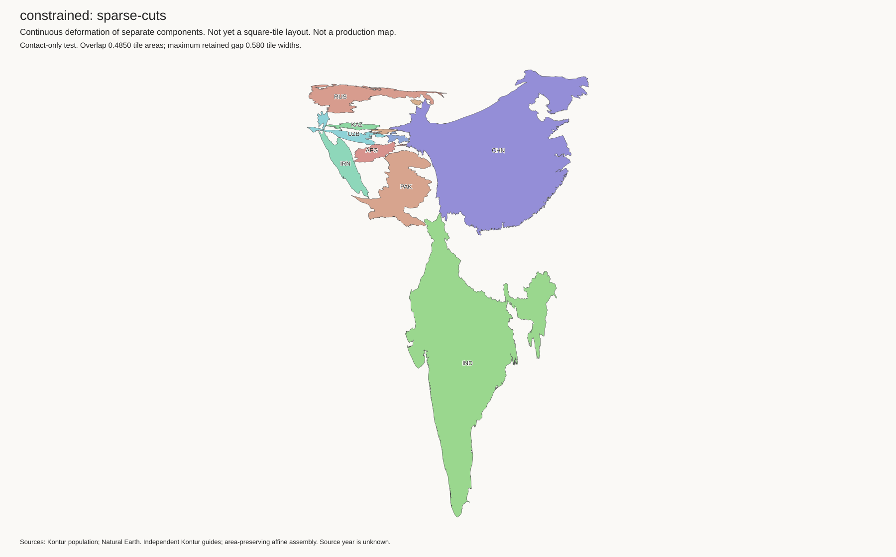
Settings, contacts, shapes, and solver checks
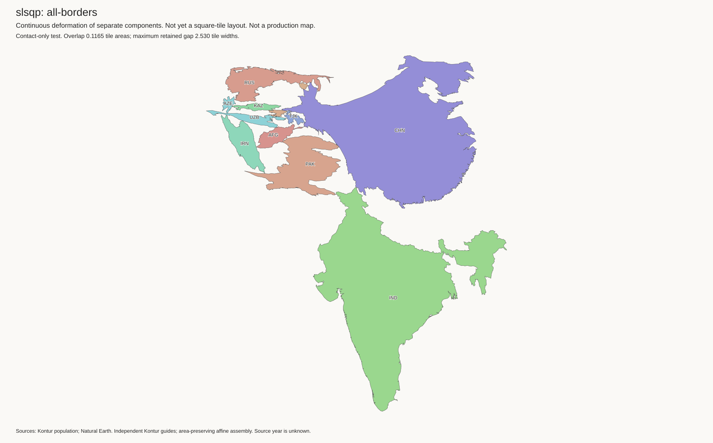
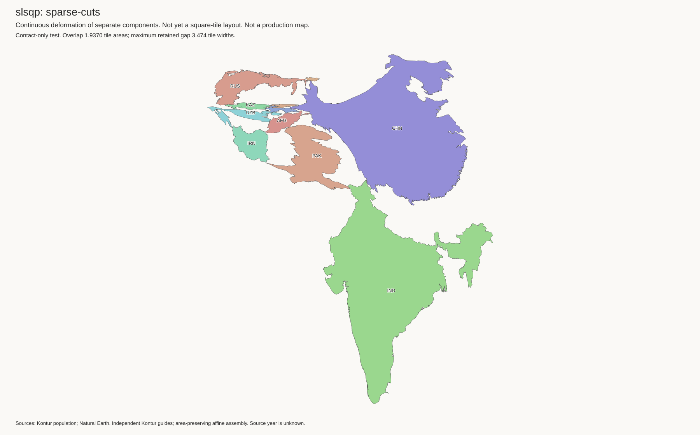
Settings, contacts, shapes, and solver checks
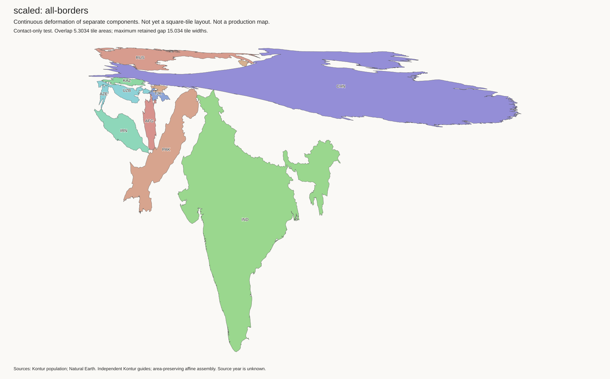
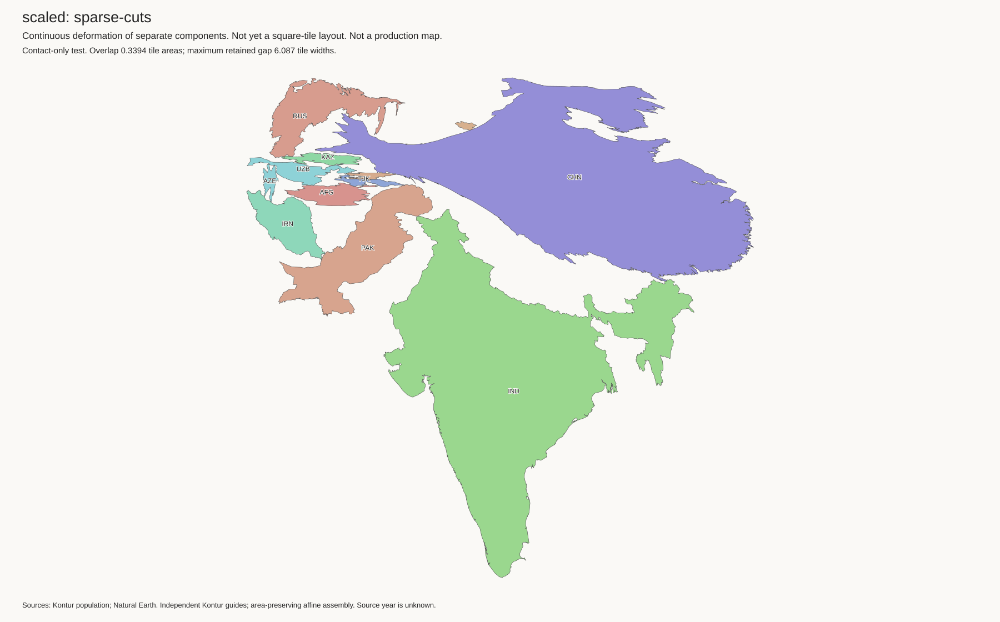
Settings, contacts, shapes, and solver checks
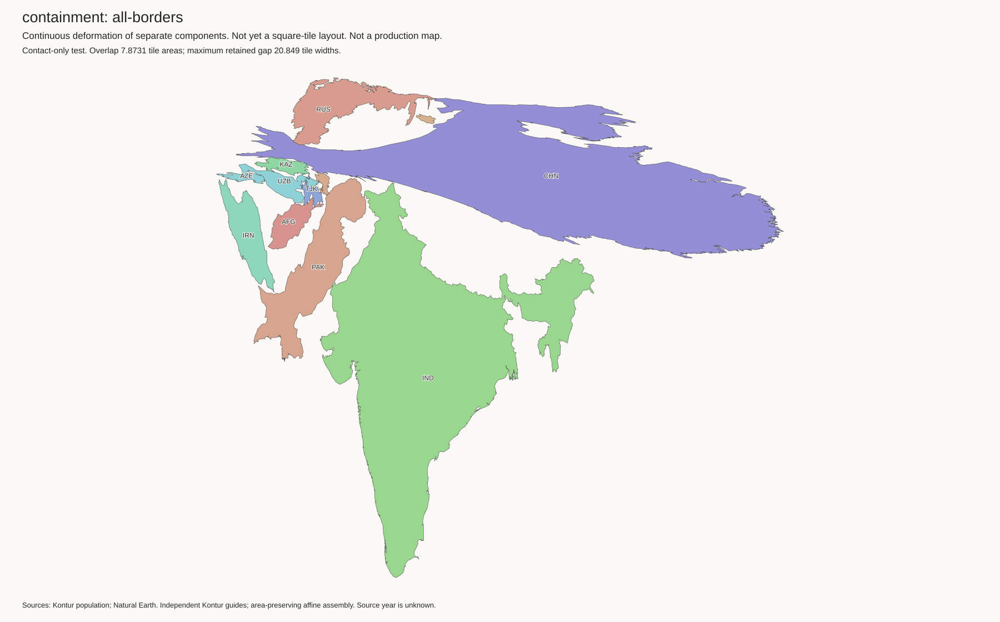
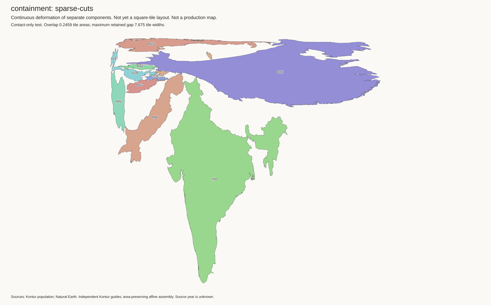
Settings, contacts, shapes, and solver checks
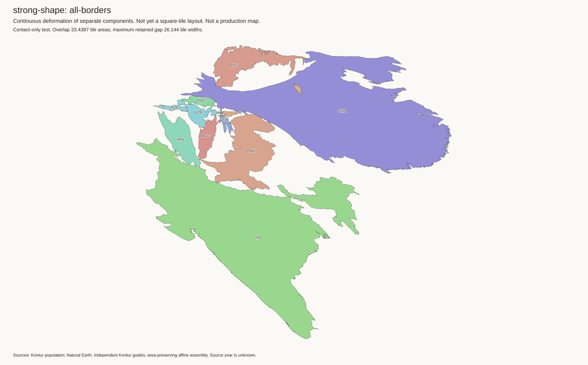
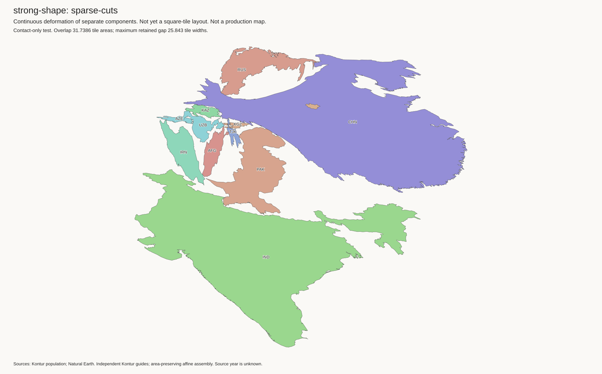
Settings, contacts, shapes, and solver checks
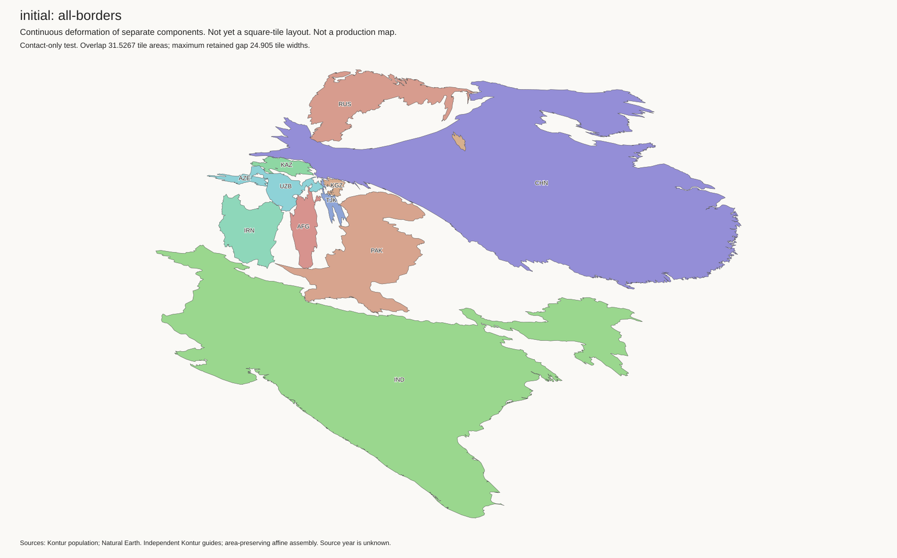
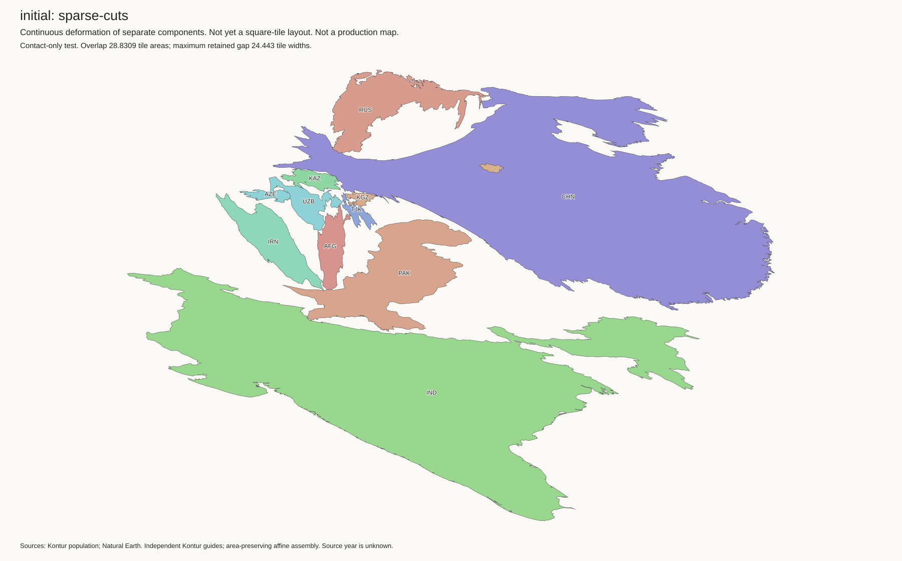